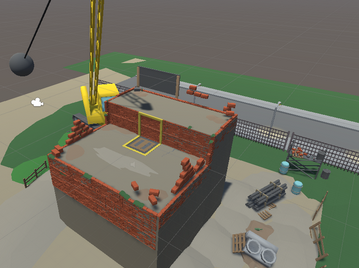

Today we’re going to explore the creation of a Tanks with Hands level with our example being the Wrecking Ball stage from the construction site map set. It’s in my opinion the best map in the game and embodies the design philosophy behind all the levels.
Every level starts as either a visual theme or an idea for a gimmick. For this particular level, it’s very obvious that it started as an idea for a wrecking ball to be a hazard. I wanted the whole level to revolve around this one central hazard that the players would maneuver around. The idea was to have the ball rhythmically swing across the middle of the stage, swooping anyone out that comes to contact with it.
When drawing up levels, I usually start with geometric shapes. This one started as just a plain square with the wrecking ball in the middle. It quickly proved problematic to place anything in the level in a meaningful way, so I decided to add some verticality to make the map asymmetric. Players don’t have any vertical movement in the game, so I added an elevator for players to get back up to high ground if they choose to do so. The elevator rises and lowers in a timed cycle. Then I slightly moved the wrecking ball in order to have more room for players to move towards the elevator. The basic layout of the map was very quickly conceived and remained pretty much the same for the remainder of the dev cycle.
Next in line were the strategies I wanted the players to develop for this stage.The player and weapon spawns are the leading factor in the way that the initial dash for weapons happens, naturally. I wanted more courageous players to dash through the wrecking ball while also leaving available strategies to more careful players. The basic premise for the level became the following:
All players spawn in the top part of the level in a row, equal distance from the wrecking ball. There are four (4) weapon spawns in the level in total, one in each corner of the stage that spawn weapons shortly after the players spawn. Two of the spawns are behind the wrecking ball from the players’ perspective. The spawns behind the ball spawn better weapons compared to the ones in the top level. Players who want high-risk high-reward can make a dash for the better weapons. In order to do so, they’ll have to risk their lives twice while crossing the ball in order to get back to the players who decide to stay up and wait for their own weapon spawns. If there are two players making the dash, they will inevitably clash while trying to board the elevator. The elevator was made to support one player only with its size, so players have no choice but to fight for the access. When the elevator rises up, it leaves a hole in the ground in its wake. The player who loses the fight for the elevator often gets sucked into the hole as a result.
While this is happening, the players in the top level will also have had weapon spawns occur, meaning they will also have a fight occurring while the bottom players are fighting for the elevator. This was designed to be an even fight in a tight space that should end before the bottom players get up, resulting in a final 1v1.
Once the bottom player rises with the elevator, the top player has the advantage by having more space and also having the bottom player be restricted to the space of the elevator. The idea was to have the top player defend his space long enough, possibly knocking the bottom player off the elevator to the lower level, to get another weapon spawn to occur and then get another weapon to wield, evening the odds for an epic final fight. At this point, the bottom player should only have one weapon, albeit a better one. If the top player failed to defend his position, the bottom player will likely overwhelm the top player with their better weapon.
This plan ended up happening pretty consistently across all players. A common theme between levels is having players diverge to get weapons in a mad dash at the start, then clash in a hotspot, get more weapons and then have a final fight fully geared up. This is sort of a micro progression system that happens every level.
After considering all the planned viable strategies, I then tried to map out the player flow in the level. Which routes they were most likely going to take. In this level the flow is very simple, just a straight line form the player spawns to weapon spawns, with a possible delay, having to wait for the wrecking ball. Then back to the elevator and top level. Alternate path is just staying at the top level and engaging in a fight immediately.
After mapping the player flow, I considered all the points where player flows intersected and created a hot spot. In a level, I always wanted at least two different hot spots so simultaneous 1v1 battles could occur. In this level it’s the elevator and top level. The hot spots have to have a little more room to maneuver in than the pathways to weapons. This so players have some wiggle room in positioning while fighting, being able to dip and dodge in and out of each others’ ranges.
Next I had to plan out the camera direction in the stage. Normally stages are very flat, meaning the camera position doesn’t have that much of a meaning. In this stage, however, because of the verticality, the camera needed to be placed in a certain way for both levels to be visible simultaneously. Some levels also have walls surrounding them, meaning we’d have to do some work to make everything visible. This level doesn’t feature walls, though, so we can keep all the hazards visible easily. The camera was placed higher than normally, looking down on the arena. This makes the wrecking ball highly visible all the time. At this point we decided to add a skid mark where the wrecking ball swings to make it easier for players to spatially recognize where wrecking ball would actually reach. This ended up being one of the most important additions to the level.
Before the level goes live, I try to figure out some possible problems with the stage and assess the risks they have. The ones that came to mind at the start were the speeds of the cycles for the wrecking ball and elevator. They needed to be slow enough to let players pass through somewhat easily, but fast enough to plan around without having think 30 seconds into the future. Other problems were the spawn rate on the top weapon spawners. I had no way of knowing how fast players would execute the planned strategies and I had to set the initial spawn rates by pure feel.
Next in line is the internal playtest. We usually tested levels in sets because they were fairly fast to develop. This would provide intel on the expected problems as well as all the little things that needed tweaking. I would play the level with 3 other people as well as step back with a notepad and make notes while others played. If I saw unexpected player strategies or the same things happening too often, I would mark them down with potential fixes. At this point, the levels would go through a few iterations. After a map set was done, I would move on to the other and wait for the next proper playtest with people who hadn’t played the game before. The maps would go through at least one more iteration based on the feedback and observations from those playtests.
And so we conclude the journey of making a Tanks with Hands level. I hope it was informative and gives you some insight on the process of level creation.